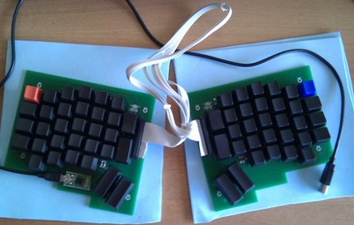
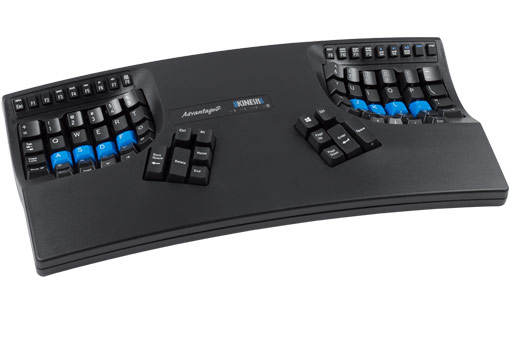
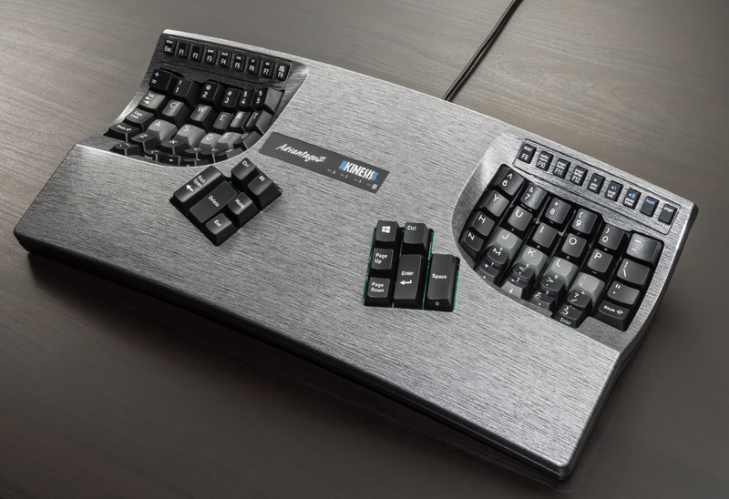
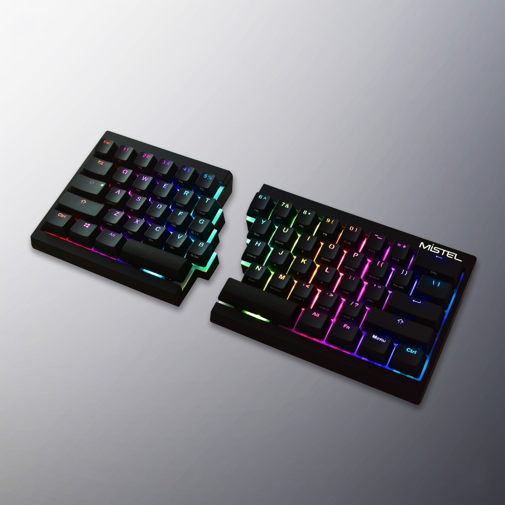
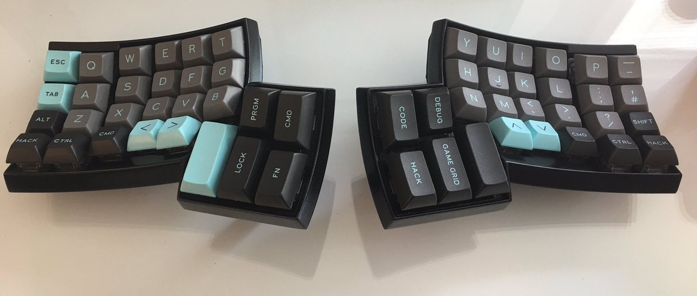
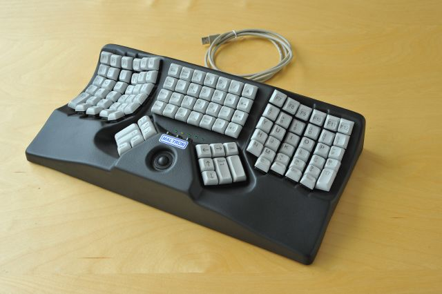

Table of Contents

Overview
The ErgoDox Keyboard is a custom made, open-source, mechanical keyboard, with a steep price tag. There are some variants of the original design specs available, such as the ErgoDox-EZ and ErgoDox Infinity. This review is for the original design distributed by MassDrop in 2014.
Pros: Ergonomic design Fully customizable layout Customizable switches, keycaps, and case
Cons: Relatively large footprint Mini-USB connector TRRS cable can be difficult to source and connectors are delicate Expensive
Features
Customizability
There are a lot of aesthetic and personal customizations for the ErgoDox, though only a few will make a large impact on the actual ergonomics. Based on the currently popular ErgoDox-EZ, you can customize the tenting legs, the keycaps (though not the profile), the lighting, and the switch type. Of these, only the tenting will significantly affect performance.
The ErgoDox has a few very compelling features, some of which are common in other keyboards nowadays, others of which are a niche within a niche. As a custom keyboard, one of the most important features is its programmability. With community support, virtually every language and layout is available, including popular alternatives such as Colemak and Dvorak. Additionally, if you cannot find a layout that suits you, it is extremely easy to create one using one of the various online tools [link].
What makes the ErgoDox so powerful is that each and every key can be programmed separately, allowing for incredibly tailored layouts. In addition to the regular capabilities of a keyboard, the custom software QMK allows for extended functionality including leader key (similar to Vim), mouse keys, stenography, and one of my ergonomic favourites: [link] 'Space Cadet Shift'. With all of these options, there is always the potential for new ergonomic adjustments should problems arise.
There are a lot of aesthetic and personal customizations for the ErgoDox, though only a few will make a large impact on the actual ergonomics. Going based on the currently popular ErgoDox-EZ, you can customize the tenting legs, the keycaps (though not the profile), the lighting as well as the switches. Of these, only the tenting will significantly affect performance. The ErgoDox has a few very compelling features, some of which are common in other keyboards nowadays, others of which are a niche within a niche. As a custom keyboard one of the most important features is its programability. With community support virtually every language and layout is available, including popular alternatives such as Colemak and Dvorak. Additionally if you cannot find a layout that suits you, it is extremely easy to create one using one of the various online tools [link]. What makes the ErgoDox so powerfull, is that each and every key can be programmed separately, allowing for incredibly tailored layouts. In addition to the regular capabilities of a keyboard, the custom software QMK allows for extended functionality including leader key (similar to Vim), mouse keys, stenography, and one of my ergonomic favourites [link] 'Space Cadet Shift'. With all of these options it may lead to a never ending cycle of ergonomic adjustments.
Connectivity
Listed as a con, the TRRS and Mini-USB cable are some of the rarer cables nowadays, and only decreasing in usage. While popularity isn't always an indicator of quality, in these circumstances, I am looking forward to my next keyboard which will hopefully be completely wireless or at least USB-C. Unfortunately, the current setup precludes the ErgoDox from being very portable, as it requires a couple of cables and a fair amount of desk space. On the other hand, the older connectors and open source firmware allow the ErgoDox to function perfectly with almost any computer with USB type A.
Description / Design
Split design
The ErgoDox keyboard is based off of another custom keyboard called the Key64, though it bears more resemblance to the Kinesis Advantage 2. It is a split design, meaning that each hand operates half of the keyboard independently. This allows for far greater control in terms of ergonomics for shoulder width and wrist angle. With the addition of tenting, each half can be tilted to improve wrist position and height. Aside from the tenting provided with the ErgoDox-EZ, a simple stand can be 3D-printed, although it can't be adjusted afterwards.
 
Ortholinear
The ErgoDox is not truly a strict ortholinear layout (a strict grid layout), since the columns are slightly offset and it includes some angled thumb keys, but the rows are not staggered in the traditional QWERTY layout. While some swear by ortholinear, the staggered columns makes biological sense to me, as the heights are adjusted for each finger length.
Alternatives
Staggered Alternatives:
If you're looking for something more traditional, there are a few split keyboards with staggered layout such as the Kinesis Freestyle 2, which has a bluetooth variant, or the Mistel Barocco as a cheaper alternative. There is always the Microsoft Ergo Keyboard 4000, although keep in mind that it is a rubber dome keyboard and not mechanical.
 
Custom Alternatives:
If the ergodox is not quite right for you, there are a plethora of other similar ortholinear and ergonomic keyboards. Some are more complex such as the Dactyl , which is based on the commercial Maltron.
 
More recently, some members in the mechanical keyboard community have managed to push the boundaries of custom boards. With new switches and connectors becoming popular, the customizations are nearly limitless.
Here are some of my favourites recently, mostly found through www.reddit.com/r/MechanicalKeyboards
other
Mechanical Keyboards
The communities behind mechanical keyboards are as colourful as they are enthusiastic. Seeing some of the custom keyboards that people have designed either leaves you with a sense of wonder or scratching your head.
If you've never ventured into the fascinating world of mechanical keyboards, there is a lot of very specific knowledge. If you're interested in tech, mechanical keyboards can be a fun way to show off and be creative.